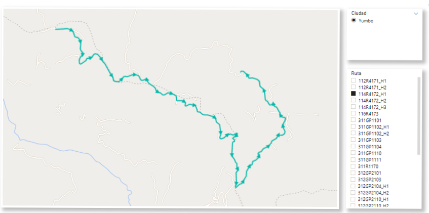
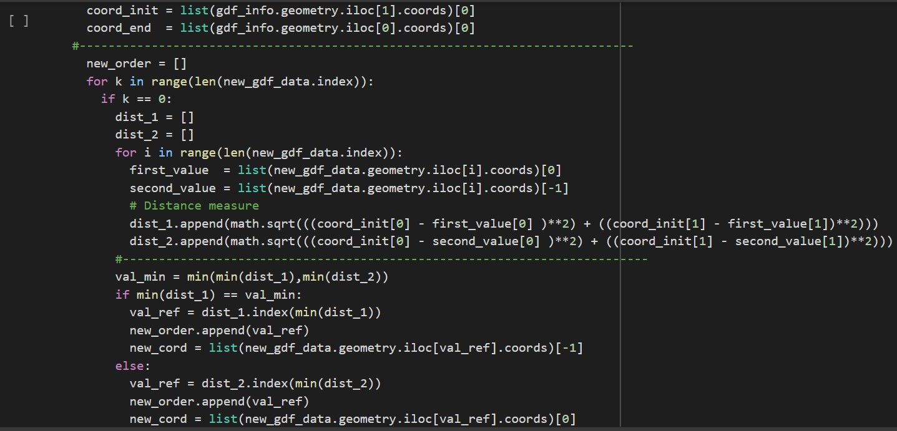
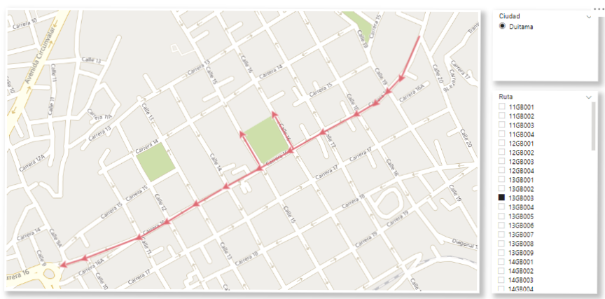
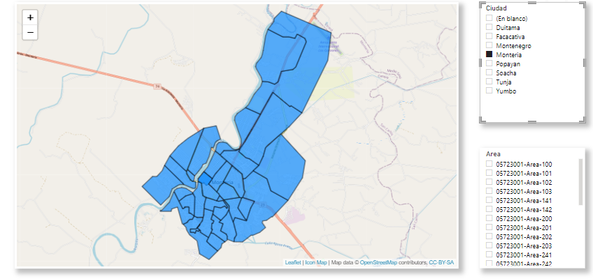

Manejo y Visualización de Datos Geográficos

Estructura de Datos y Visualización de Datos
Los datos geográficos proporcionados por la empresa se encontraban almacenados en múltiples archivos por objeto, variando entre 4 a 7 archivos cuyo principal contenedor era un archivo .TAB, esencial para visualizar dicho objeto. Debido a esto la información geográfica contaba con las siguientes características:
- 14.409 archivos con la información de rutas de actividad.
- LineStrings desordenados, imposibilitando la visualización adecuada.
- 5.659 archivos con la información de las áreas de actividad.
- Diferentes sistemas de coordenadas(CRS).
- Formato compatible con Power BI
Con el objetivo de implementar un formato más adecuado de almacenamiento de datos geográficos en el cuál se implementa correcciones y que fuese compatible con Power BI, se implementó scripts en Python. Los cuales ordenaron los LineStrings de las rutas en base a puntos de referencia de donde inician y terminan, además de establecer como estándar el sistema de coordenadas EPSG: 4326.

Posterior a la implementación de los scripts de Python, la información geográfica incorporó las características:
- 3 archivos con la información de rutas de actividad.
- Rutas debidamente direccionadas.
- 3 archivos con la información de las áreas de actividad.
- Sistema de coordenadas (CRS) estandarizado.
- Formato compatible con Power BI
Finalmente los archivos .Geojson se almacenaron en un DataWarehouse alojado en el servicio Azure y con el objetivo visualizar la información geográfica y adicionalmente incorporar un componente de análisis descriptivo relacionado al componente se optó por la implementación del software "Power BI", utilizando los objetos de visualización "Route Map" e "Icon Map".
